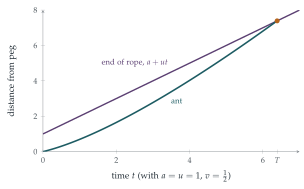

STEP II 2018, Question 10
Read the question before you go on. It is in the STEP Support Programme’s question database: step.maths.org/questions/18-s2-q10
The hook
An ant sets off along a rubber rope one kilometre long, walking at one centimetre per second. Every second, the rope is stretched uniformly by another kilometre. The far end races away at a thousand metres per second, a hundred thousand times faster than the ant. Does the ant ever reach the end?
Astonishingly, yes. The stretching carries the ant along with it, and although the ant’s progress as a fraction of the rope shrinks, the fractions add up like the harmonic series, which diverges (Section 2.3). The ant arrives, though only after a time that dwarfs the age of the universe. This question solves the continuous version exactly, and finds that the time grows exponentially with the ratio of the speeds.
Before you start
The string is stretched uniformly: every piece is stretched by the same factor. At time \(t\) its length is \(a + ut\). If the point at distance \(x\) from the peg is a fraction \(\frac{x}{a + ut}\) of the way along, how fast does it move?
Each point on the string keeps the same fraction \(f\) of the length, so its distance from the peg is \(f(a + ut)\), and its speed is \(fu = \frac{ux}{a + ut}\). Points near the peg barely move; the far end moves at \(u\).
Working it through
Stage 1 The ant’s equation
The ant moves at \(v\) relative to the string, plus the speed of the string beneath it: \[\frac{\mathrm{d}x}{\mathrm{d}t} = v + \frac{ux}{a + ut}.\]
Differentiate \(\frac{x}{a + ut}\) by the quotient rule and use the equation for \(\dot x\).
\[\frac{\mathrm{d}}{\mathrm{d}t}\Bigl(\frac{x}{a + ut}\Bigr) = \frac{\dot x}{a + ut} - \frac{ux}{(a + ut)^2} = \frac{1}{a + ut}\Bigl(v + \frac{ux}{a + ut}\Bigr) - \frac{ux}{(a + ut)^2} = \frac{v}{a + ut}. \qed\] The fraction of the string the ant has covered increases at the rate \(\frac{v}{a + ut}\): its own speed divided by the current length. The stretching drops out completely, because it does not change anyone’s fraction.
Stage 2 Reaching the end
Integrate from \(0\) to \(t\). When does the fraction reach \(1\)?
The ant starts at the peg, so \[\frac{x}{a + ut} = \int_0^t\frac{v\,\mathrm{d}s}{a + us} = \frac vu\ln\frac{a + ut}{a}.\] The ant reaches the end when the fraction is \(1\): \(\ln\frac{a + uT}{a} = \frac uv = k\), so \(a + uT = ae^k\), that is \[uT = a(e^k - 1). \qed\] The logarithm grows without limit, so the ant always arrives, however fast the rope is stretched.
Stage 3 The way back
Walking back, the ant’s speed relative to the string is \(-v\). What is the rate of change of its fraction now? It starts at fraction \(1\) at time \(T\).
The same calculation with \(-v\) gives \(\frac{\mathrm{d}}{\mathrm{d}t}\bigl(\frac{x}{a + ut}\bigr) = -\frac{v}{a + ut}\), so \[\frac{x}{a + ut} = 1 - \frac vu\ln\frac{a + ut}{a + uT}.\] The fraction reaches \(0\) when \(a + ut = (a + uT)e^k\). Since \(a + uT = ae^k\), the return time is \[t - T = \frac{(a + uT)(e^k - 1)}{u} = \frac{ae^k\cdot uT/a}{u} = Te^k. \qed\] The journey back takes \(e^k\) times as long as the journey out: by the time the ant turns round, the string is \(e^k\) times longer than at the start.

Looking back
Use the right variable. The fraction of the rope covered was the natural quantity: the stretching does not change it.
Integrating factor in disguise. Multiplying by \(\frac{1}{a + ut}\) turned a linear differential equation into an exact derivative.
Divergence beats speed. The fraction grew like a logarithm, which is unbounded, so the ant always arrives.
What’s really going on
The harmonic series version
The puzzle is usually told with discrete stretches. A rope is \(1\) km long; the ant walks \(1\) cm in the first second; then the rope is stretched by \(1\) km; then the ant walks another centimetre, and so on. In the \(n\)th second, the ant covers \(1\) cm of a rope \(n\) km long: a fraction \(\frac{1}{100\,000\,n}\). Stretching does not change its fraction, so after \(N\) seconds it has covered \[\frac{1}{100\,000}\Bigl(1 + \frac12 + \frac13 + \cdots + \frac1N\Bigr) \approx \frac{\ln N + 0.577}{100\,000}\] of the rope. It arrives when \(H_N \approx 100\,000\), after about \(e^{100\,000}\) seconds, a number with over \(43\,000\) digits. (For comparison, the universe is about \(4 \times 10^{17}\) seconds old.) Our continuous answer agrees: \(k = \frac uv = 100\,000\), and \(T \approx \frac aue^k\).
Light in an expanding universe
The ant on the rope is a model of light crossing an expanding universe. Distant galaxies recede from us, carried by the expansion of space itself, and light from them travels towards us at speed \(c\) through the expanding space, as the ant walks along the stretching rope. Whether light from a distant galaxy ever reaches us depends on how the expansion rate changes with time. In a universe expanding at a steady rate, like the rope, light always arrives eventually. In a universe whose expansion accelerates, as ours appears to, there are galaxies whose light will never reach us: there is a cosmic event horizon. The analogue for the ant is a rope stretched exponentially, so that the end’s speed grows in proportion to the length (try it in the exercises).
The puzzle seems to have been invented by the French mathematician Denys Wilquin in 1972, as a worm on an elastic band, and was popularised by Martin Gardner in his Scientific American column and in his book Time Travel and Other Mathematical Bewilderments. It is one of the best-known examples of a result that contradicts intuition and is nevertheless easy to prove, and it is a favourite illustration of the divergence of the harmonic series.
The thinking skill
When part of a problem changes everything (here, the stretching), look for a quantity it leaves alone.
Stretching changes every distance but no fraction. Working with the fraction removed the stretching from the problem. At university, this idea appears as comoving coordinates in cosmology and fluid mechanics, and more generally as the search for invariants under a transformation.
Try this next
Halfway. When is the ant halfway along the rope? Is that before or after time \(\frac T2\)?
Exponential stretching. Suppose instead the rope’s length is \(ae^{\lambda t}\). Show that the ant reaches the end only if \(v > \lambda a\). (This is the cosmic event horizon.)
An accelerating rope. If the length is \(a + \frac12bt^2\), does the ant always arrive?
The discrete puzzle. In the discrete version, how many seconds does the ant need to cover \(1\%\) of the rope? Use \(H_N \approx \ln N + 0.577\).
Further reading
Martin Gardner, Time Travel and Other Mathematical Bewilderments (W. H. Freeman). Includes the ant on the rubber rope.
Julian Havil, Gamma: Exploring Euler’s Constant (Princeton University Press). The harmonic series, and the ant.
Barbara Ryden, Introduction to Cosmology (Cambridge University Press). Expanding space, horizons and comoving coordinates, at undergraduate level.